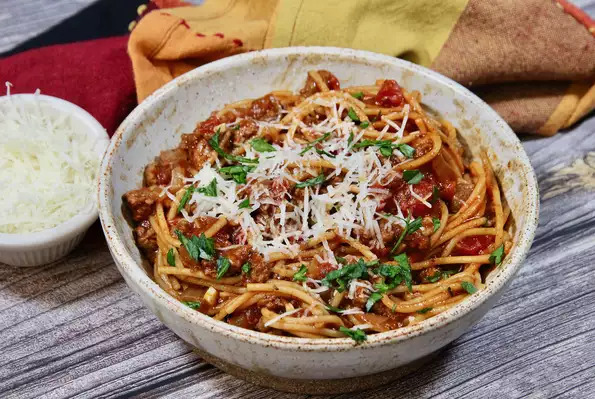

Pot Spaghetti
Description
My variation of an old Southern Living recipe - a double recipe will fill a
Dutch oven and make plenty for an extended family dinner.
Ingredients
1 pound lean ground beef
1 large onion, chopped
2 cloves garlic, minced
1 (14 ounce) can tomato sauce
1 (14 ounce) can petite diced tomatoes
2 cups water
1 tablespoon chili powder
1 teaspoon dried oregano
1 teaspoon ground black pepper
7 ounces whole wheat spaghetti
1/4 cup grated Parmesan cheese, or to taste
Steps
Heat a Dutch oven over medium-high heat. Cook and stir ground beef, onion,
and garlic until beef is browned and crumbly and onion is translucent, 5 to 7 minutes.
Drain and discard excess grease.
Stir in tomato sauce, diced tomatoes, water, chili powder, oregano, and black pepper.
Bring to a boil. Cover, reduce heat, and let simmer, stirring often, for about 30 minutes.
Break spaghetti into thirds and add to the pot; cover and simmer, stirring often,
until pasta is tender, about 20 minutes. Serve topped with Parmesan cheese.